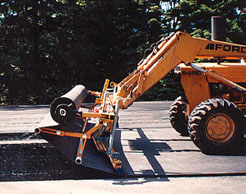
Grizzly 600T
Dual-bar telescoping frame, short-roll arm, brush articulation, and oil-truck mounting kit.
Specs & features →It's not the tractor—it's the laydown unit that installs the fabric. GAC's patented Grizzly and Roll Puller equipment delivers wrinkle-free laydowns every time, from DOT highways to airport runways.
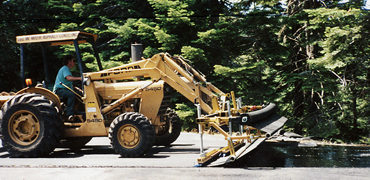
Patented double-bar frame, telescoping arms on bearings, and articulating brushes— combined for superior fabric placement job after job.
From container unloading to final pass. Shared parts, shared training, one team of engineers behind every weld.

Dual-bar telescoping frame, short-roll arm, brush articulation, and oil-truck mounting kit.
Specs & features →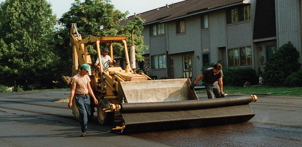
Lighter footprint for municipal crews. Keeps the patented swing-arm and tension systems.
Meet the Cub →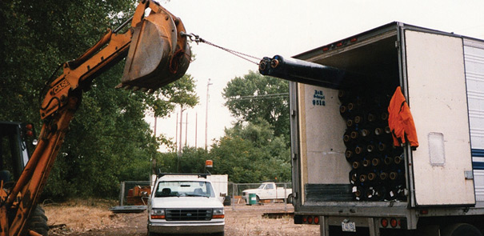
RP3XL and RP4XL tools unload containers solo with deeper core grip and laser-cut teeth.
View models →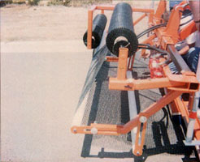
Extra-fill brushes, dual-PVC roller tension kits, rotating spindle rebuilds, and retrofit hardware.
Browse kits →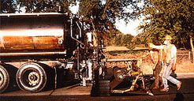
Landfill widths, hover-head mounts, and multi-roll rigs designed to your spec.
Build yours →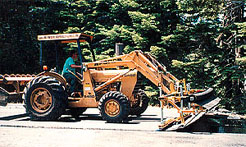
On-site supervision, HQ workshops, and CE-style sessions on geosynthetics best practices.
Plan a session →Telescoping arms on bearings, crab-claw swing arms, and a patented middle arm let crews jump between centered runs and curb-hugging passes without stopping.
The operator stays comfortable while the laydown unit handles the gymnastics—less time jockeying tractors, more time finishing tonnage.
Dual-bar PVC tension plus optional roller systems stretch fabrics before they hit the brush— wiping wrinkles instantly.
Inspectors get seamless overlaps, and your crew walks away knowing the mat will stay bonded when the paver rides over it.
GAC begins developing paving fabric installation equipment. The Model 750 becomes the flagship heavy-duty mechanical/hydraulic folding unit.
"The machine didn't need to fold—it could telescope." The GRIZZLY is born: a powerful double-bar mainframe that telescopes 1 ft to 20 ft.
The CUB launches: a 1 ft to 15.5 ft telescoping single-bar mainframe with the same patented features in a lighter package.
Six U.S. Patents (4,555,073 · 4,657,199 · 4,657,332 · 4,699,330 · 4,705,229 · 4,742,970) covering nine state-of-the-art features, all issued to founder Mounque "Monk" Barazone.
Equipment operating in 60+ countries. Over 99% of all GAC machines sold since 1980 are still installing fabric.
The tractor doesn't lay the fabric—the machine bolted to it does. Six U.S. Patents and four decades of R&D live in every Grizzly, every Cub, and every Roll Puller we ship.
Bring roll widths, core sizes, and DOT specs. We'll match the frame, upgrades, and logistics so your crew can uncrate, pin the mounts, and start laying fabric before sundown on day one.
"Over 99% of all GAC machines sold since 1980 are still installing fabric today. From DOT highways to airport runways, our equipment delivers the precision that inspectors demand and crews trust."
Real installs, real crews, real conditions.
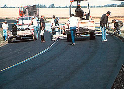
▶Watch new crews installing fabric for the first time. Tractor mounting offers better visibility for dedicated operations.
Watch on YouTube →Mountain roads with tight curves and city streets. Eliminates a separate tractor and operator—saves $500–$1000 daily.
Watch on YouTube →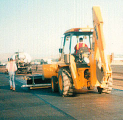
▶Airport and parking lot projects with new crews. Ideal for multi-task tractors.
Watch on YouTube →40+ years of installation know-how, ready to download.
RP3XL and RP4XL specs, use cases, and safety guidance for container unloading.
Download PDF →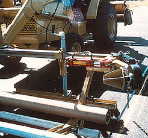
Latest upgrades to brush systems, tension plates, and roller modules.
Download PDF →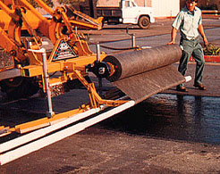
Technical details on articulating brushes, extensions, and replacement schedules.
Download PDF →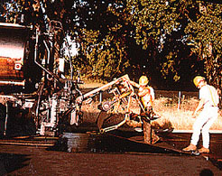
Portfolio of bespoke fabrications for landfills, slopes, and multi-roll rigs.
Download PDF →Bring roll widths, core sizes, and job specs. We'll match the frame, upgrades, and logistics.